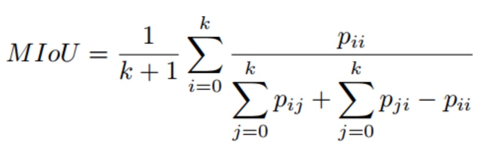

6.1 目标分割概述
学习目标
- 目标
- 说明目标分割的定义
- 说明目标分割的任务类型
- 知道目标分割的常见数据集
- 知道目标分割的评估方式
应用
- 无
计算机视觉与机器学习研究者对图像分割问题越来越感兴趣。越来越多的应用场景需要精确且高效的分割技术，如自动驾驶、室内导航、甚至虚拟现实与增强现实等。这个需求与视觉相关的各个领域及应用场景下的深度学习技术的发展相符合，包括分割及场景理解等。分割（应用于静态2D图像、视频甚至3D数据、体数据）是计算机视觉的关键问题之一。
6.1.1 什么是目标分割
- 定义：在计算机视觉领域，图像分割（Object Segmentation）指的是将数字图像细分为多个图像子区域（像素的集合）的过程。
图像分割的目的：简化或改变图像的表示形式，使得图像更容易理解和分析。图像分割通常用于定位图像中的物体和边界（线，曲线等）。更精确的，图像分割是对图像中的每个像素加标签的一个过程，这一过程使得具有相同标签的像素具有某种共同视觉特性。
图像分割的结果：图像上子区域的集合，或是从图像中提取的轮廓线的集合（例如边缘检测）。一个子区域中的每个像素在某种特性的度量下或是由计算得出的特性都是相似的，例如颜色、亮度、纹理。邻接区域在某种特性的度量下有很大的不同。比如下面：

目标分割任务类型
目前的分割任务主要有两种： 语义分割和实例分割
- 语义分割就是把图像中每个像素赋予一个类别标签（比如汽车、建筑、地面、天空等），标注为人，羊，狗，草地。而不需要羊1，羊2，羊3，羊4，羊5等

- 实例分割（上图右）其实就是目标检测和语义分割的结合。相对目标检测的边界框，实例分割可精确到物体的边缘；相对语义分割，实例分割需要标注出图上同一物体的不同个体。

下面这张图详细表示区别：

6.1.2 目标分割算法介绍
深度学习最初流行的分割方法是，打补丁式的分类方法 (patch classification) 。逐像素地抽取周围像素对中心像素进行分类。由于当时的卷积网络末端都使用全连接层 (full connected layers) ，所以只能使用这种逐像素的分割方法。但是到了2014年，来自伯克利的Fully Convolutional Networks(FCN) 卷积网络，去掉了末端的全连接层。随后的语义分割模型基本上都采用了这种结构。
6.1.2.1 算法分类
背景：应用各种传统的计算机视觉和机器学习技术，这些问题已经得到了解决。虽然这些方法很流行，但深度学习革命让相关领域发生了翻天覆地的变化，因此，包括语义分割在内的许多计算机视觉问题都开始使用深度架构来解决，通常是卷积神经网络CNN，而CNN在准确率甚至效率上都远远超过了传统方法。当然，相比于固有的计算机视觉及机器学习分支，深度学习还远不成熟。也因此，还没有一个统一的工作及对于目前最优方法的综述。
基础：最成功用于语义分割的深度学习技术均来自同一个种类，即全卷积网络FCN，成为了深度学习技术应用于语义分割问题的基石
下图就是分割算法的分类类别，主要指的是广义的语义分割的几条方向线：

- 1、基础算法
- FCN（全卷积网络）
- 1、基于解码器的方法
- SegNet，U-Net
- 2、基于信息融合的方法
- 2、整合上下文知识
- 条件随机场：DeepLab (v1 & v2)、DeepLab v3
- 扩张卷积：Dilated Convolutions、ENet
- 多尺度预测：
- 特征融合：Sharp Mask
- 循环神经网络：ReSeg、RCNN、LSTM-CF、DAG-RNN
- 3、实例分割
- DeepMask、SDS
- 4、三维数据：Point Net
- 5、视频序列
- 6、MaskRCNN
- 一个小巧、灵活的通用对象实例分割框架。不仅可对图像中的目标进行检测，还可以对每一个目标给出一个高质量的分割结果。
6.1.3 数据集及竞赛
介绍语义分割领域最近最受欢迎的大规模数据集。所有列出的数据集均包含像素级别或点级别的标签。这个列表将根据数据内在属性分为3个部分：
2维的或平面的RGB数据集
2.5维或带有深度信息的RGB（RGB-D）数据集
纯体数据或3维数据集。
下表给出了这些数据集的概览，收录了常见的数据集并提供了一些有用信息如他们的被构建的目的、类数、数据格式以及训练集、验证集、测试集划分情况

6.1.3.1 二维数据集
1、PASCAL视觉物体分类数据集
PASCAL视觉物体分类数据集（PASCAL-VOC）(http://host.robots.ox.ac.uk/pascal/VOC/voc2012/) : 包括一个标注了的图像数据集和五个不同的竞赛：分类、检测、分割、动作分类、人物布局。分割的竞赛很有趣：他的目标是为测试集里的每幅图像的每个像素预测其所属的物体类别。有21个类，包括轮子、房子、动物以及其他的：飞机、自行车、船、公共汽车、轿车、摩托车、火车、瓶子、椅子、餐桌、盆栽、沙发、显示器（或电视）、鸟、猫、狗、马、绵羊、人。如果某像素不属于任何类，那么背景也会考虑作为其标签。该数据集被分为两个子集：训练集1464张图像以及验证集1449张图像。

2、城市风光数据集

6.1.3.2 2.5维度数据集
随着廉价的扫描器的到来，带有深度信息的数据集开始出现并被广泛使用。NYUDv2数据集（http://cs.nyu.edu/∼silberman/projects/indoor scene seg sup.html）包含1449张由微软Kinect设备捕获的室内的RGB-D图像。其给出密集的像素级别的标注（类别级别和实力级别的均有），训练集795张与测试集654张均有40个室内物体的类，该数据集由于其刻画室内场景而格外重要，使得它可以用于某种家庭机器人的训练任务。但是，它相对于其他数据集规模较小，限制了其在深度网络中的应用。

6.1.3.3 3D数据集
纯粹的三维数据集是稀缺的，通常可以提供CAD网格或者其他的体元表示如点云等。为分割问题获取三维数据集是困难的，因此很少有深度学习方法可以处理这种数据。
斯坦福2D-3D-S数据集（http://buildingparser.stanford.edu）
是一个多模态、大规模室内空间数据集，是斯坦福三维语义分析工作[64]的扩展。提供了多个模态：二维RGB，2.5维添加深度信息的图片、三维网格和点云，均提供分割标注信息。该数据集有70496张高分辨率的RGB图像（1080x1080分辨率），以及其对应的深度图谱、表面法线、网格以及点云，军事带有像素级别及点级别的语义标注信息。这些数据取自6个室内区域，分别来自三个不同的教育与办公建筑。共有271个房间，大约7亿个点，被标以13个类。

6.1.4 算法效果
二维图像领域
目前在二维图像领域认为DeepLab是最可靠的方法，其在几乎每个RGB图像数据集上都远远超过了其他方法。
二维图像这一类有7个数据集：PASCAL VOC 2012、PASCAL上下文、PASCAL人物、CamVid、CityScapes、斯坦福背景以及SiftFlow数据集。这些数据集涵盖了多种情况和优化目标。下面列举其中部分数据集的效果
- VOC2012 数据集表现

- CitySpaces数据集表现

2.5维数据
对于2.5为数据这一分类，也就是数据中不仅包含RGB三个通道，还包含深度信息，下面是三个数据集的对比分析，分别是SUN-RGB-D、NYUDv2、SUN3D

3D数据集
两个三维数据集：ShapeNet Part和Stanford-2D-3D-S

6.1.4.1 评价指标
对于一个分割系统来说，要对该领域产生重要的影响，必须经过严格的评估。另外，评估过程中必须使用标准的众所周知的评价指标，这样对于现有方法来说才是公平的。进一步的，必须对方法的各个方面进行评估，然后才能断言该系统的有效性，这些方面包括运行时间、占用内存、准确率等。由于对目标或上下文的依赖性，某些指标可能会更加重要，也就是说，在一个实时处理的应用中，可能会为了运行速度而牺牲准确率。但是，为了科学的严谨性，提供该方法的所有可能的评价指标度量是极其重要的。
5.1.1 运行时间
考虑到可重复性以及对后续研究者的帮助，有必要在提供运行时间的同时给出系统运行的硬件信息，以及基准方法的配置。如果合理地做到了这些，后续的研究者们将可以判断出这个方法是否对其真实应用实用，并且可以使用相同的环境进行公平的对比。
5.1.2 占用存储空间
内存占用是分割问题中的另一个重要的考量。虽然不及运行时间那样受限，因为扩充容量一般是可行的，其仍然作为系统的一个限制因素。在某些场景下，例如机器人平台上的板载芯片，内存并不会像高性能服务器中一样充裕。即使是普遍用来加速深度网络的高端的显卡（GPU）也不会搭载大容量的存储空间。基于这些考虑，以及与在时间问题上相似的对于实际应用的考虑，详细记录网络所占用的最大及平均存储空间是极其有用的。
5.1.3 准确率
已经提出了许多用于评估语义分割问题准确率的评价指标，这些指标通常是像素级准确率及IoU的变体。我们报告了语义分割方面最常用的评价指标，用来度量逐个像素标注类的方法的表现。为便于解释，我们给出下述标号的意思：我们假设共有k+1类，（从L0到Lk，包括一个空类或者是背景），pij是本属于第i类却被分到第j类的像素数量。也就是说，pii代表的是分类正确的正例数量，其他几个p值类似。
平均交并比（MIoU）：这是用于分割问题的标准评价指标，其计算的是两个集合的交集与其并集的重合比例，在本问题中，其计算的便是真实分割与系统预测的分割之间的交并比。

MIoU是最常用的一个，因为它最具代表性，且非常简单。许多竞赛以及研究者使用该指标来报告其结果。
6.1.4.2 目标分割总结
目前DeepLab、MaskRCNN是最可靠的方法，其在几乎每个RGB图像数据集上都远远超过了其他方法。
2.5维和多模态数据集上，循环的网络如LSTM-CF起到了主导作用。三维数据的分割问题仍有很长的路要走，PointNet为解决无序点云的分割问题开辟了道路。
- 处理视频序列同样作为一个待开发区域，至今并没有明确的方向，但是，时钟卷积神经网络凭借其效率和准确率还是成为了最可靠的方法。三维卷积是值得关注的，由于其强大的功能及对多通道输入数据的可扩展性，且三维卷积可以同时捕获时间空间信息。
6.1.5 总结
- 目标分割的定义
- 目标分割的任务类型
- 目标分割的常见数据集
- 目标分割的评估方式